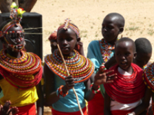
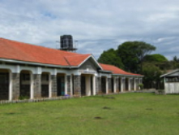
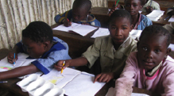

Mentors are people helping people. A new WAY to Mentor is to support an individual, family, group, village, community, project or organization in East Africa with gifts in the $50 - $5000 range rather than millions of dollars. This way Mentors get to play a part in developing the world.
Mentors decide which entity they want to support based interests, values and available financial resources. WAY provides information on trusted individuals and entities on this website. Once a Mentor decides who they wish to mentor they inform WAY and receive contact information and other pertinent details.
Mentors are trusted to interact directly with their “mentee” from that point on. WAY only needs to know when support is actually sent so one “mentee” can be replaced with another on this website.
-commit to a minimum of one year “walking with” an individual or organization with little experience in helping communities overcome larger/longer-term challenges in health, education, etc.

FAITH, A SAMBURU HEALTH CARE WORKER - Faith is a young, dynamic, woman who works alongside Irish missioners, Stephen and Angelina Cowan. Faith serves among her people by traveling from village to village talking to women about the importance of sanitation, clean water, personal hygiene and education.
Female genital mutilation (FGM) is still considered a rite of passage in Samburu culture. Faith was ostracized from her village because she refused to undergo the ritual. Still she continues to stand against the practice by teaching others about health issues and other negative consequences associated with the practice.
Elementary education is free in Kenya but most villagers see little value in it. Faith explains how education can benefit the community encouraging parents to make sure girls, as well as boys, attend to school. Unfortunately, many girls who start school do not finish because of early marriages, and unplanned pregnancies.
Faith has a chance to teach these things to the girls and boys during camps she helps coordinate every holiday (April, August and December). Camps are held in Tuum, a very poor, arid, rural area with extremely tough terrain and no public transportation. Each camp brings together over 120 young people from 7 different villages to interact with one another, study God’s word and have fun.
Families are asked to pay the equivalent of 50 cents for the junior camp and $1 for the senior camp but no child is turned away. Estimated expenses for each camp is approximately $ 900 for food and $1200 for fuel to transport campers due to the distance from Tuum. Tires for that vehicle must be replaced every six months at a cost exceeding $1000!
Faith would appreciate words of encouragement and support and contributions of $50, $500 or even $1000 will go a long way toward helping her help the next generation envision a different future for themselves and their families.
- assist non-governmental organizations develop small projects that have the potential to enhance the quality of living for a large number of under-served people in significant ways.

- lend support to small organizations that have created innovative programs that affirm and strengthen those who have been marginalized, oppressed or impoverished so that they can become contributing members of society.

ONE LAMB TRUST seeks to rescue young girls from sexual exploitation through school partnerships and community participation. One Lamb partners with a school and other entities to provide art classes, bible lessons, reading assistance, scholarships and personal hygiene items to some of the most vulnerable children living in one of the poorest neighborhoods in Nairobi.
One Lamb seeks relationships with new friends who want to help one little girl (i.e. one “lamb”) with donations of $10 a year for books and learning materials; $18 per year for “sanitary packs”; and scholarships of $60 monthly/$720 annually for children who are permitted to leave their homes and enroll in boarding schools (safer environments for them to thrive in). Donations to the general fund will help the running of the ministry and upcoming projects including a Rescue Center that will more effectively assist child victims of sexual abuse.
- by praying, writing letters, purchasing books, covering school fees, etc., Encouragementors help an individual or family navigate some of the challenges in their physical, emotional, financial and spiritual lives.
A REFUGEE FAMILY FROM SUDAN - Hanan and her family hail from the Nuba Mountains, an extraordinary isolated area in northern Sudan that has been torn by war for close to 50 years because of their allengence to people in the south. Many of the Nuba people groups are thought to be descendants of great Nubian Kingdoms, including Kush and Mero.
Political instability caused Hanan and her husband to locate to Kenya several years ago. When he abandoned the family Hanan became a single mother with three children. She would later “adopt” a fourth child after the death of her sister. On many occasions Hanan also offers hospitality to new refugees who do not have a place to stay or food to eat.
Her status as a refuge, lack of formal education and limited English skills restrict Hanan’s job prospects to “live in” positions. But the family resides in an unsafe neighborhood so she is understandably reluctant to leave her children alone at night. As a result the family has had to rely on the generosity of friends and sponsors in addition to support from the Nuba Relief, Rehabilitation and Development organization (NRRDO).
Hanan requests prayers for her children and herself. Two of her children currently attend a secondary missionary school and the other two are currently enrolled in junior primary school. Hanan has also returned to school to improve her English in order to get a decent job that will allow her to be home in the evenings and support family members who still live in the Nuba Mountains. School fees range from $500 - $2500 per term.
At today’s exchange rate, school fees and books for the 17 year old is approximately $2500 per year; $1300 for the 15 year old; and $1200 each for the 11 and 9 year olds. Hanan also needs at least 3 more semesters of English language classes at a cost of $ 500 - $ 700 per semester.